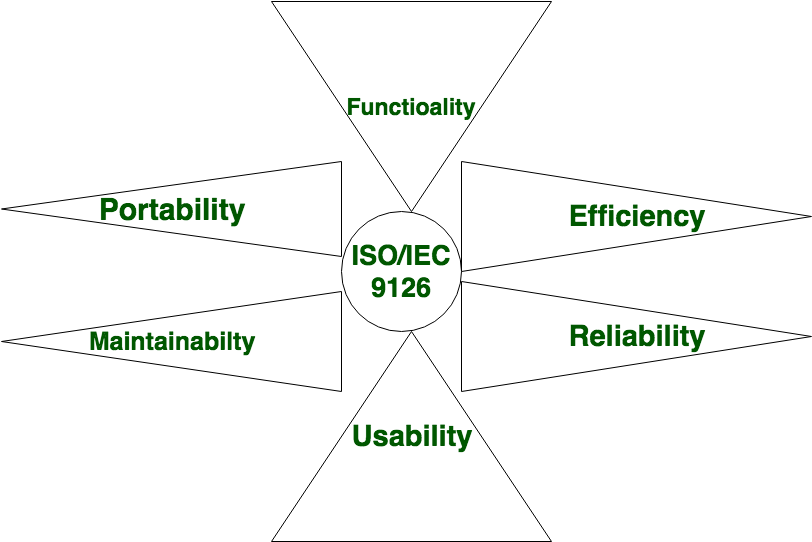

Software Characteristics
- Software should achieve a good quality in design and meet all the specifications of the customer.
- Software does not wear out i.e. it does not lose the material.
- Software should be inherently complex.
- Software must be efficient i.e. the ability of the software to use system resources in an effective and efficient manner.
- Software must be integral i.e. it must prevent from unauthorized access to the software or data.
Software Characteristics are classified into six major components:
1. Functionality:It refers to the degree of performance of the software against its intended purpose. Functionality refers to the set of features and capabilities that a software program or system provides to its users. It is one of the most important characteristics of software, as it determines the usefulness of the software for the intended purpose. The more functionality a software has, the more powerful and versatile it is, but also the more complex it can be. It is important to balance the need for functionality with the need for ease of use, maintainability, and scalability. Required functions are: Suitability, Accuracy, Interoperability, Compliance, Security
2. Reliability:A set of attributes that bears on the capability of software to maintain its level of performance under the given condition for a stated period of time. Examples of factors that can affect the reliability of software include:
- Bugs and errors in the code
- Lack of testing and validation
- Poorly designed algorithms and data structures
- Inadequate error handling and recovery
- Incompatibilities with other software or hardware
Required functions are: Recoverability, fault tolerance, maturity
3. Efficiency:It refers to the ability of the software to use system resources in the most effective and efficient manner. The software should make effective use of storage space and executive command as per desired timing requirements. Required functions are: Minimal Time and Minimal resources
4. Usability:It refers to the extent to which the software can be used with ease. the amount of effort or time required to learn how to use the software. Required functions are: understandability, learnability, operability
5. Maintainability:It refers to the ease with which the modifications can be made in a software system to extend its functionality, improve its performance, or correct errors. Required functions are: testability, changability, operability, stability
6. Portability: A set of attributes that bears on the ability of software to be transferred from one environment to another, without or minimum changes. Required functions are: adaptability, installability, replacability